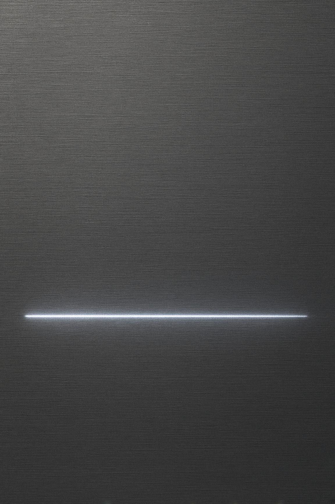

futurepop · EBM · dal 1988
assemblage 23
Una voce ferma, sopra macchine che non chiedono permesso.

Adesso
Germania e Svezia, cinque date02 — Ascolto
Album · 7 nov 2025
Null
Dieci brani, 44 minuti. Metropolis, 7 novembre 2025. Shear lo descrive come un disco da club, energico. Niente edizione speciale.
03 — Date
in calendario
| Data | Città | Sala | Stato | Azione |
|---|---|---|---|---|
| 20 | Karlsruhe | Die Stadtmitte | disponibile | Biglietti, si apre in una nuova scheda |
| 21 | Oberhausen | Kulttempel | disponibile | Biglietti, si apre in una nuova scheda |
| 22 | Hamburg | Indra | disponibile | Biglietti, si apre in una nuova scheda |
| 23 | Jönköping | SekktorF | sold out | |
| 24 | Hannover | Subkultur | sold out |
04 — Identità
scrive tutto lui
Tom Shear scrive, canta e programma Assemblage 23 da solo, dal 1988. Il primo disco, «Contempt», esce nel 1999. Da «Failure» in poi il catalogo vive soprattutto su Metropolis. In dieci album in studio la voce resta pulita e i testi stanno su cose che non si sciolgono in pista: lutti, colpa, tenuta, rabbia. Dal vivo Paul Seegers suona le tastiere e Mike Jenney la batteria. Oggi il lavoro è a Franklin, Massachusetts. L’ultimo disco è «Null», 7 novembre 2025. Shear lo ha chiamato un album da club, energico.

05 — Media
una prova

“Leaves you breathless and in awe at its sonic onslaught, rendered by the sheer force of its jagged, metallic power.”
“Ranks among their best albums. Mainman Tom Shear shows no sign of waning in his creative muse.”
Il battito resta. Il resto si sente dopo.